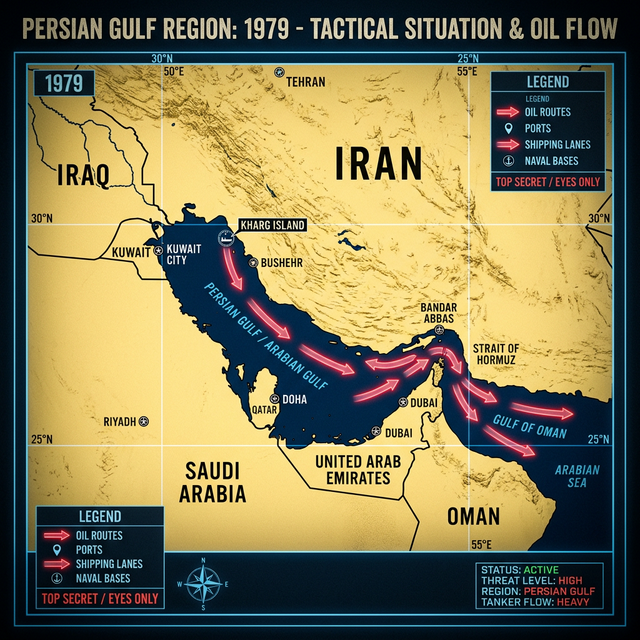

Advisors, you serve the Province of Nova Scotia. Your mission
is to analyze how the global crisis in Iran will directly threaten our local economy. This briefing is
the mandatory first step before we begin our strategic graphing work.
Mr Waugh's Old House
The World's Artery
Tactical Geography of the Strait
21 MILESNarrowest Chokepoint
20.5MBarrels Daily Transit
There is NO VIABLE ALTERNATIVE bypass.
Regional Overview

If you block this 21-mile stretch of water, you stop the
global heart from beating.
THE "WHITE REVOLUTION"
Pre-1979: The Shah's Iran
Iran as a Western-allied "Island of Stability."
Rapid modernization and industrialization.
Top-down secularization causes deep internal friction.
Before the 1979 change, Iran was a key US ally and a major
Westernized power.
1973: THE FIRST SHOCK
When Supply becomes a Weapon
OPEC cuts supply to Western nations.
Global oil prices QUADRUPLE (from $3 to $12) overnight.
Halifax families experience gas rationing for the first time.
History shows that when supply is used as a weapon, the world
feels it instantly.
SEEDS OF REVOLUTION
1978: The Unrest Begins
Massive strikes in the oil sector.
Religious and secular groups unite against the Shah.
Global markets begin to panic about supply.
The revolution didn't happen overnight. It was a slow burn of
strikes and protests.
1979: THE REVOLUTION
The Fall of the Strategic Order
4%Global Production Drop
$39Price Per Barrel (from $15)
The Shah falls; the Islamic Republic begins.
In 1979, the Iranian Revolution changed the price of
everything you buy.
444 DAYS OF CRISIS
Severing Global Relations
52 Diplomats held hostage in Tehran.
US-Iran diplomatic relations are PERMANENTLY SEVERED.
US halts all oil imports from Iran.
This was a total economic divorce.
THE "RED LINE"
The Carter Doctrine
"An attempt to gain control of the Persian Gulf will be regarded as an assault on the interests
of the USA."
The Gulf becomes a direct military concern for the West.
President Carter made it clear: The Strait is too important
to lose.
IDEOLOGICAL WAR
The Language of Asymmetric Pressure
Mural propaganda marks the "Great Satan" era.
The Strait becomes a tool for STRATEGIC EXTORTION.
Strategic mistrust becomes the "New Normal."
These murals signaled a permanent shift in how Iran viewed
the West and the strategic chokepoints.
DECADES OF TENSION
50 Years of Economic Warfare
Nearly 50 years of friction between Iran and the West.
The West counters political threats with crushing economic sanctions.
Sanctions target oil exports and banking.
This is a half-century of economic warfare that has hollowed
out the Iranian economy.
NUCLEAR AMBITION
Strategic Leverage
Iran continues development of its nuclear program.
International community imposes further sanctions to prevent proliferation.
The Strait of Hormuz is used as "Nuclear Leverage."
The chokepoint is the only card the regime has left against
nuclear sanctions.
GENERATIONAL DIVIDE
The Crisis of Legitimacy
Modern, urban Iranians grow increasingly disconnected from the regime.
Discontent simmers for decades among the youth and middle class.
Demands for reform reach a fever pitch.
The real threat to the regime isn't just the US Navy—it's
their own citizens.
CRUSHING OPPOSITION
Digital & Physical Suppression
Protests are brutally crushed every few years to maintain control.
Internet is cut nationwide to stop opposition organization.
Information blackout hides gov't brutality from the world.
When the people rise, the regime hits the 'kill switch' on
the digital world.
JANUARY 2026: THE BREAKPOINT
The Great Uprising
Largest protests in Iranian history involving millions.
Discontent spreads to the traditional "Bazaar" shopkeeper class.
Regime response is the most violent in 50 years.
The regime is fighting for its life.
FEBRUARY 2026: KINETIC WAR
Regional Destabilization
US and Israel begin precision bombing of strategic assets.
Iran retaliates by attacking US Arab allies (UAE, Kuwait, Qatar).
The Persian Gulf becomes a live combat zone.
The shadow war came into the light. February saw the first
direct strikes.
MARCH 2026: THE CHOKE
The Artery is Severed
Iran halts ALL oil tankers from passing through the Strait.
Global oil prices shoot up instantly as the artery is severed.
THIS IS THE WORLD YOU ARE ENTERING.
The tankers have stopped. The oil is trapped. The price spike
is happening right now.
THE DIRECT IMPACT
Why Nova Scotia Cares
GLOBAL SPOT PRICE: Conflict 10,000km away = Price spike at Shell
on Spring Garden Rd.
HEATING OIL: 40% of NS homes relay on furnace oil—costs will
cripple families.
LOGISTICS: Everything in our stores arrives by truck or ship.
Everything is now more expensive.
Why YOUR gas prices are tied to the events of the last three
months.
PROMPT: 40% of our homes use oil for heat and all our groceries are trucked in. How can a price spike in
the Persian Gulf affect the price of milk at a Sobeys in Clayton Park? What does this do to a family's
savings?
THE INELASTICITY TRAP
Why Gas is "Different"
NO SUBSTITUTES: You can't put milk in your engine.
THE MUST HAVE: Prices rise 50%, but demand falls 5%.
This turns a "Shortage" in Iran into an ECONOMIC EMERGENCY in
Nova Scotia.
Inelasticity is the reason why a blockade in Hormuz turns
into a crisis in Nova Scotia.
PROMPT: We live in a cold climate. What does that do to the demand for oil in NS? If prices double, why
can't people just switch to 'alternatives' tomorrow? Why is this trap so dangerous?
STEP 1: CALIBRATION
Data Terminal Training Protocol
Pass the 8-STAGE RAMP to unlock Level 4 Clearance.
Master the X/Y Axis identification logic.
Validate your reasoning with the AI Chief of Staff.
Before you handle the live crisis, you must master the tools.
Calibrate now.
PROMPT: How might this supply shock affect the OVERALL Nova Scotia economy in the long term (6-12
months)? Think about unemployment, small businesses, and general inflation.
MISSION DIRECTIVE
MITIGATE LOCAL ECONOMIC COLLAPSE
ADVISOR: YOUR TASK IS TO STABILIZE THE NOVA SCOTIA ECONOMY
The Premier is waiting. Proceed and protect the province.